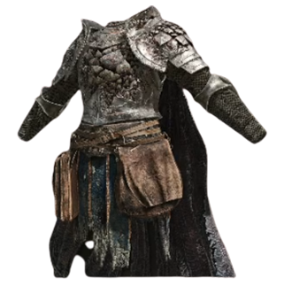
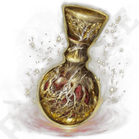
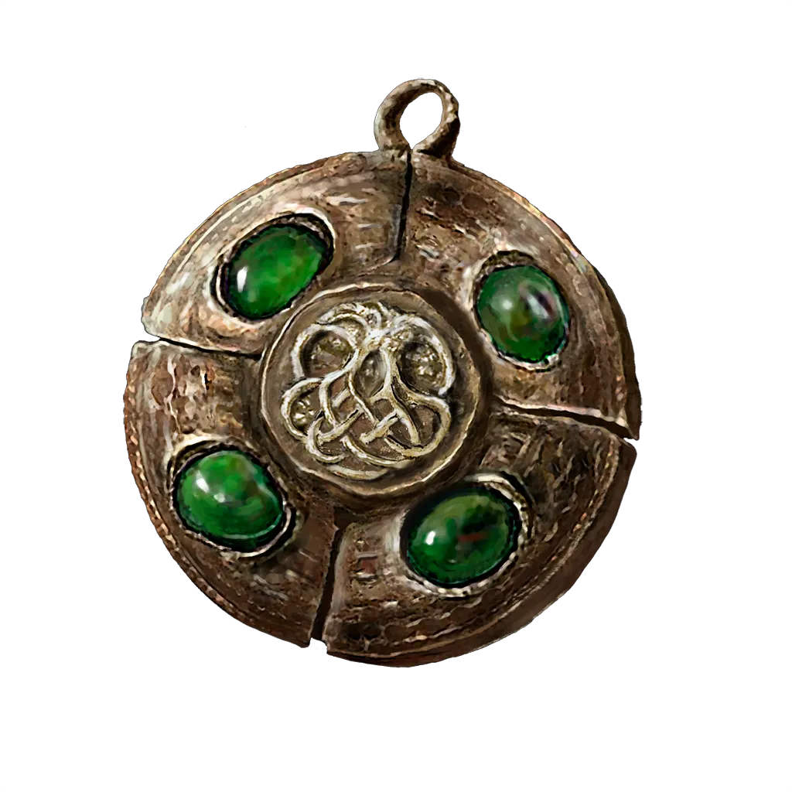

|
Armas | Las Tierras Intermedias albergan una enorme variedad de armas, desde espadas largas y hachas hasta lanzas, arcos y bastones mágicos. Algunas, conocidas como Armas Legendarias, fueron forjadas por los herreros más grandes de la Era Dorada y guardan un poder sin igual. |
 |
Armaduras | Los conjuntos de armadura protegen al Sinluz de los peligros de las Tierras Intermedias. Algunos conjuntos pertenecieron a grandes guerreros o semidioses caídos, y portarlos es cargar con el peso de su historia. |
 |
Consumibles | Pociones, hierbas y ungüentos que el Sinluz puede usar en combate para recuperar vida o potenciar sus capacidades. El Frasco Sagrado es el más valioso de todos, ya que puede rellenarse en los Lugares de Gracia. |
 |
Amuletos | Pequeños objetos que otorgan al Sinluz bonificaciones pasivas permanentes. Los hay de todo tipo: algunos aumentan el daño, otros mejoran la resistencia o potencian la magia. Encontrar y combinar los amuletos adecuados es clave para dominar las Tierras Intermedias. |